Portfolio
12 pages: dining-room built-in (designed and built), EyeBridge wearable (1st place, $25,000 Harvey Kaylie Prize for Hardware), fit-test coupons, robot vehicle and earlier work, and a supplement dispenser in development.
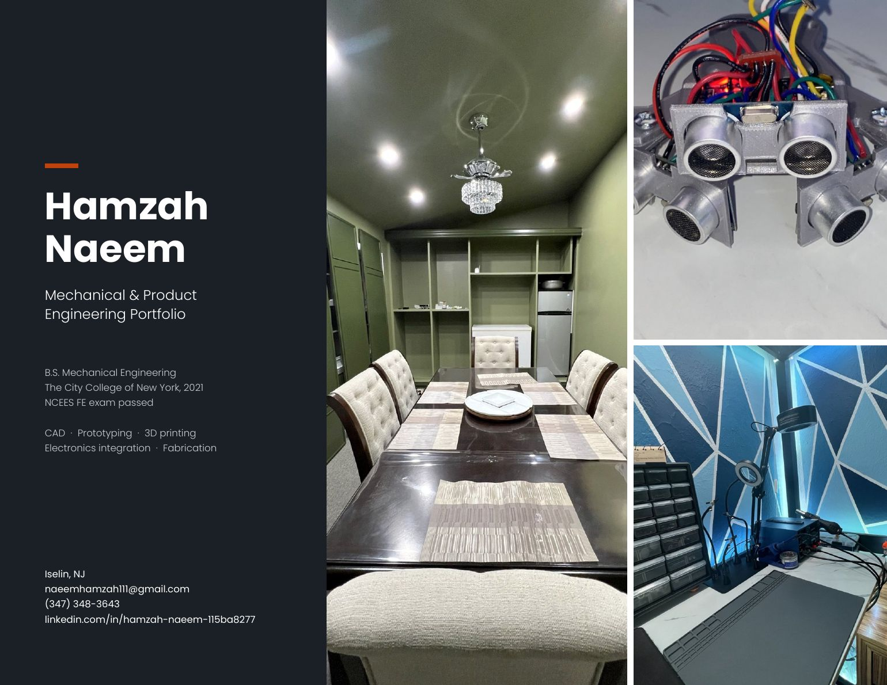
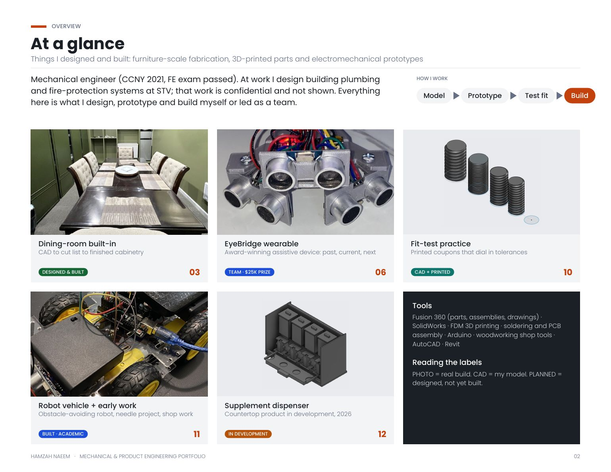
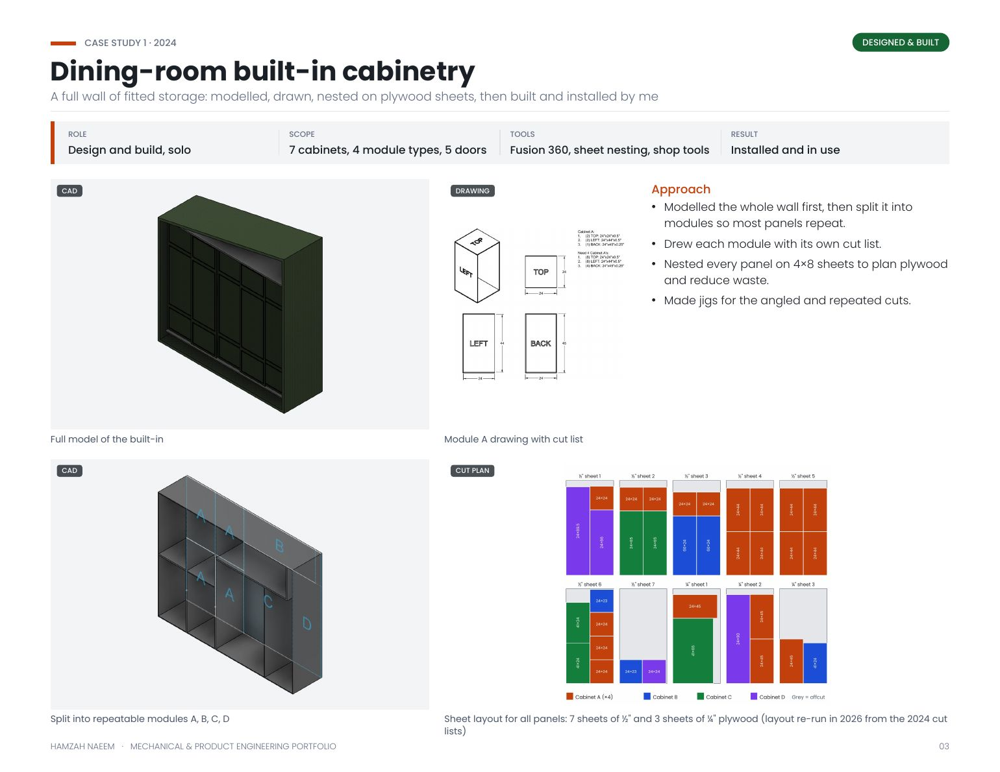
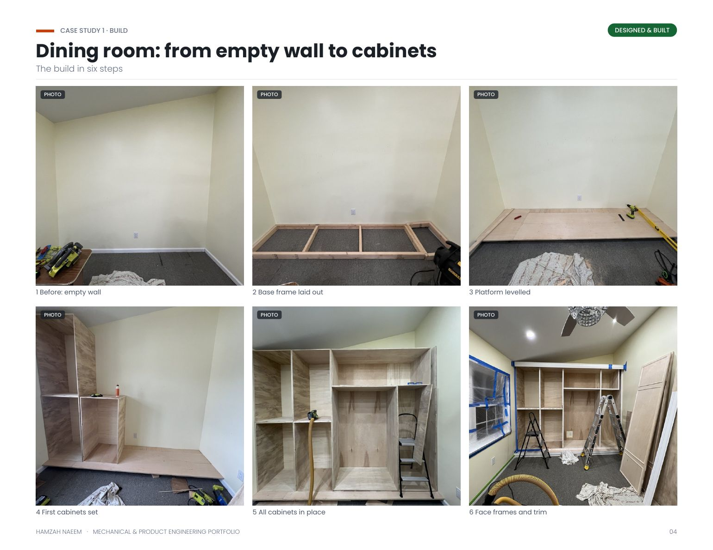
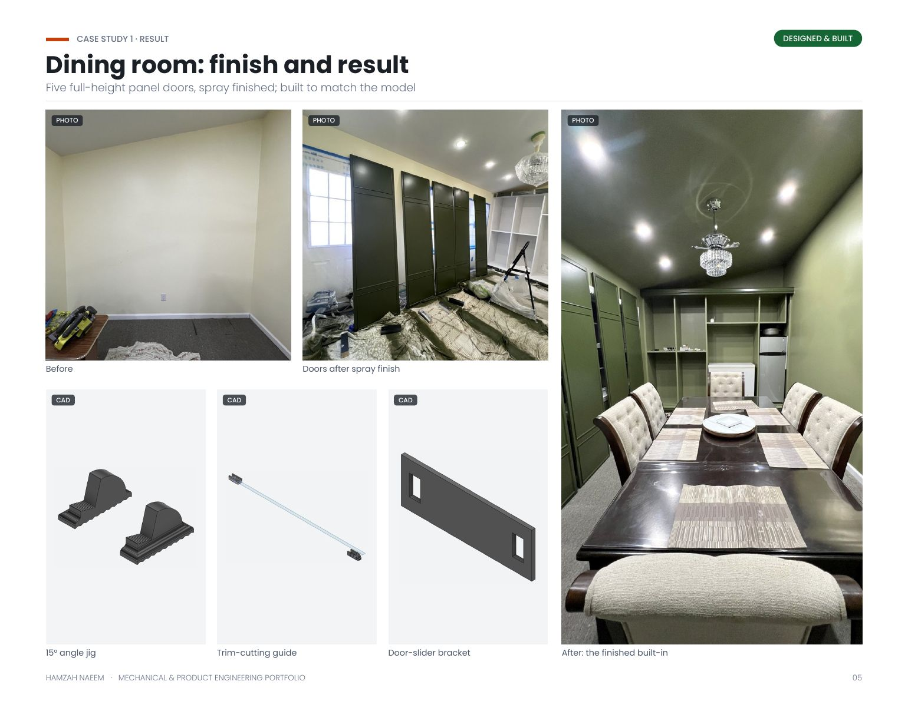
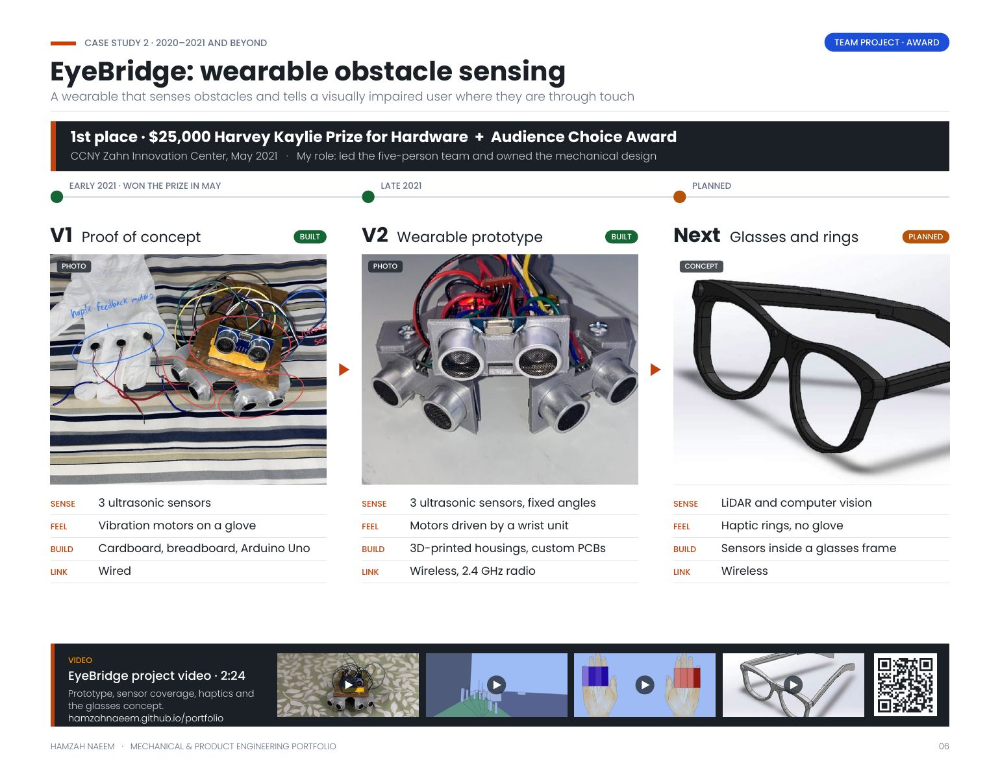
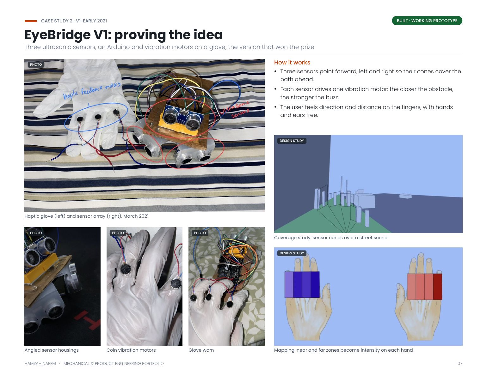
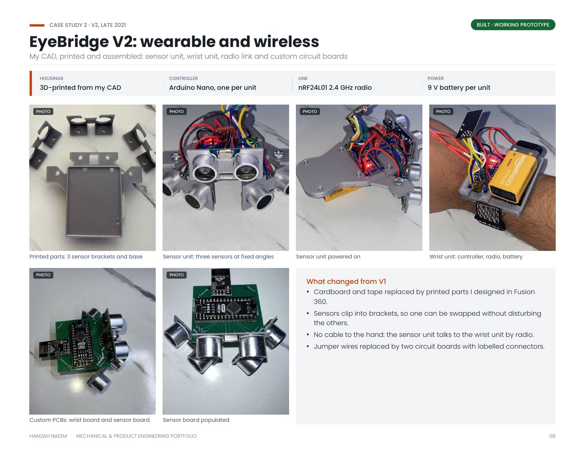
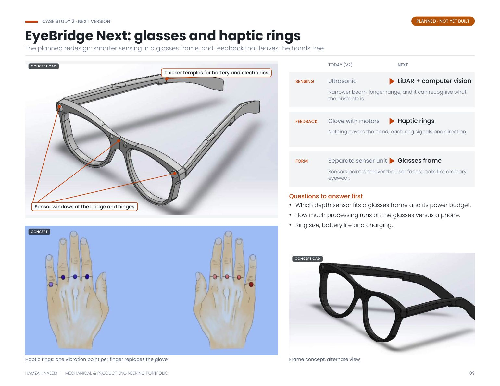
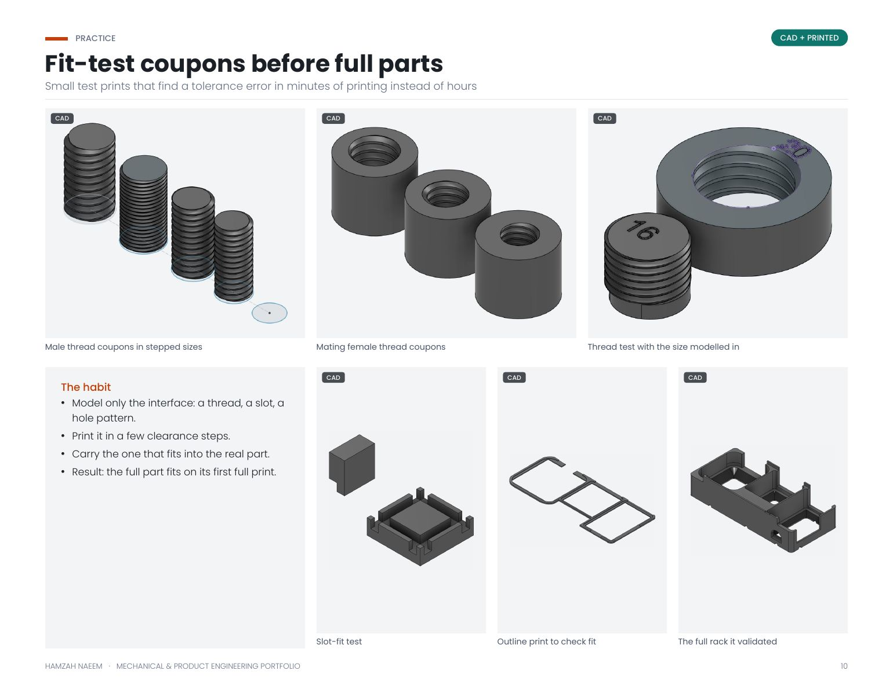
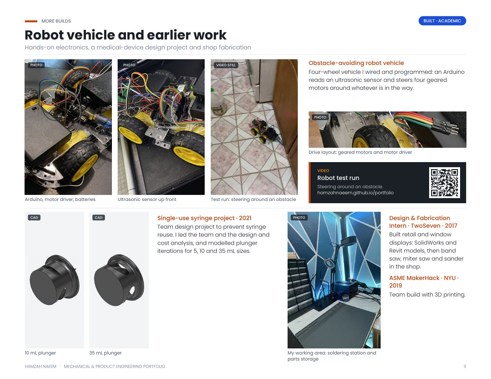
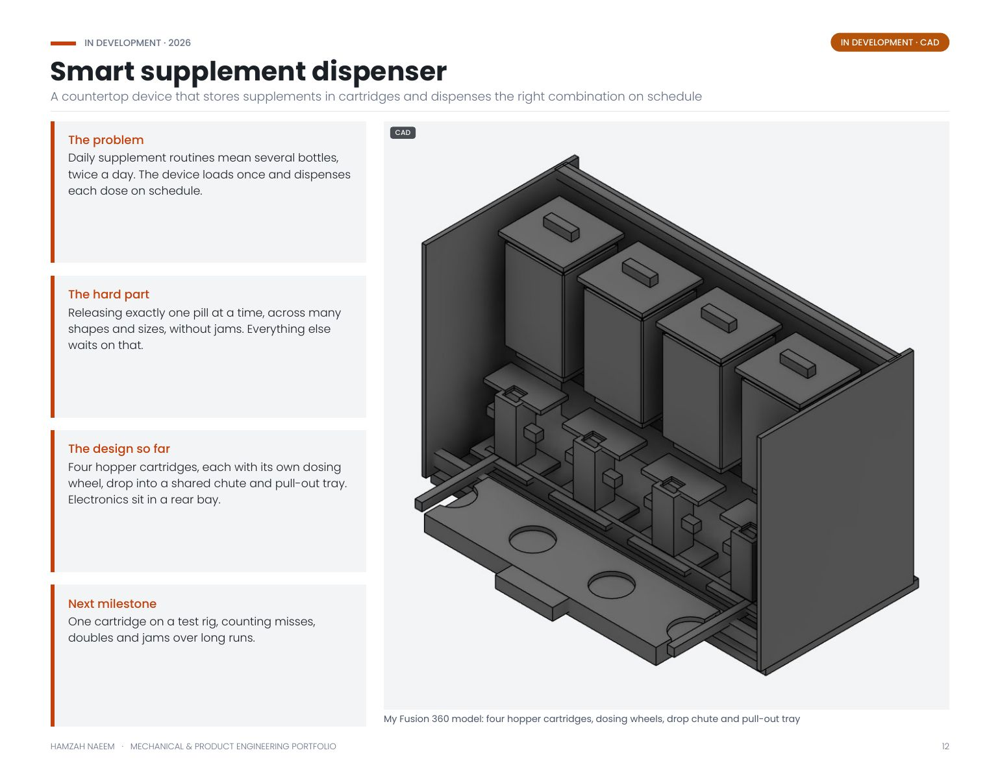
EyeBridge: wearable obstacle sensing
1st place, $25,000 Harvey Kaylie Prize for Hardware and Audience Choice Award, CCNY Zahn Innovation Center, 2021. The planned LiDAR and computer-vision glasses with haptic rings (concept), then the real build: the V1 haptic glove, the award, and the 3D-printed wireless V2.
Obstacle-avoiding robot vehicle: test run
Arduino-controlled four-wheel vehicle with ultrasonic sensing, steering around an obstacle.